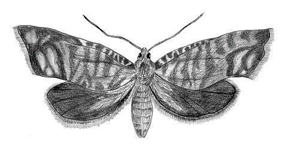
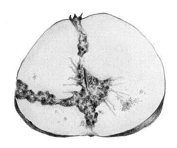
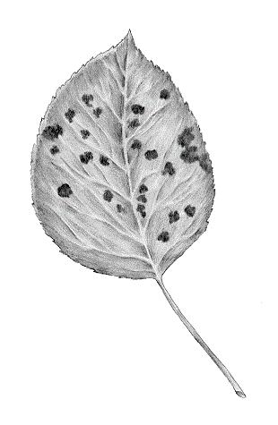

Las enfermedades y plagas que podemos encontrar en los cultivos de manzano son las siguientes:
Manzano: Enfermedades y tratamiento | ||||
Nombre |
Descripción |
Tratamiento |
Descargar |
|
 |
PSILA (Cacopsylla pyri L) | Son insectos chupadores de savia de pequeño tamaño pertenecientes al género Homóptera. La plaga de estos artrópodos en el manzano se caracteriza por la aparición de hojas retorcidas y malformadas. Además, producen una melaza que puede causar infecciones fúngicas secundarias, llamadas negrilla, y a veces pueden ser vectores de algunos virus. | Para su control, se suelen emplear insecticidas especificos como Bermectine, que contiene un
compuesto natural obtenido de fermentaciones bacterianas llamado abamectina. La dosis recomendada.es: 80cm3/100L |
Documento1 |
|  | CARPOCAPSA (Cydia pomonella L.) |
Es un insecto del orden Lepidoptera que parasita a especies frutales de pepita y de hueso, aunque es
sobre los frutales de pepita, principalmente manzano, donde forma plagas habitualmente La manifestación
propia de este parásito en el manzano es la aparición, en la fruta afectada, de una mancha circular
oscura en cuyo centro hay un orificio por el que sale una especie de serrin que no es otra cosa que los
excrementos de la larva que hay en el interior. Los frutos parasitados caen prematuramente al suelo, y
los que logran madurar sin caer al suelo sufren una gran depreciación.  Este parasito pasa el invierno como oruga en el interior de un capullo, entre las rugosidades de la madera. El adulto aparece en primavera, y las hembras comienzan la puesta cuando la temperatura después del crepúsculo es mayor de 16°C por espacio de 10 a 20 dias. |
Para el tratamiento de los cultivos afectados por estos lepidopteros utilizaremos un insecticida
especifico como Belthirul, que además es respetuoso con el medio ambiente ya que únicamente afecta a los
insectos que se alimentan de nuestros cultivos sin resultar tóxicos para el resto. La dosis recomendada es: 100cm3/100L |
Documento2 |
|  | MOTEADO (Venturia inaequalis y Venturia pirina) | Son hongos que desarrollan enfermedades en especies de frutales de pepita, el primero de ellos en manzano y membrillero y el segundo en peral. En los frutos, flores y hojas, preferentemente por el haz en el manzano y por el envés en el peral, aparecen unas manchas redondeadas y oscuras, como si fueran salpicaduras, que en el fruto pueden llegar a tener más de un centímetro de diámetro, además de que terminan por suberizarse y agrietarse. En las ramas de 1-2 verdes suelen presentarse unos pequeños chancros redondeados, de algunos milimetros de diámetro, con la epidermis abombada, rota y de color marrón. Los hongos productores de la enfermedad evolucionan a lo largo del invierno en las hojas caidas al suelo |
Para controlar el moteado, se pueden plantar variedades resistentes o tolerantes al moteado, así como evitar
las plantaciones en zonas sombrías o excesivamente húmedas. También mejorar la ventilación del árbol y la
penetración de la luz mediante realización de una poda correcta, asi se acorta el tiempo de secado de las
hojas y frutos, además de facilitar la penetración de productos fitosanitarios. Mantener la hierba corta y
retirar las hojas caidas al suelo al final del otoño. Se puede aplicar Cairel en dosis de 170cm3/ha |
Documento3 Documento4 |
| Otros enlaces de interés | ||||
Más información: Plagas y enfermedades